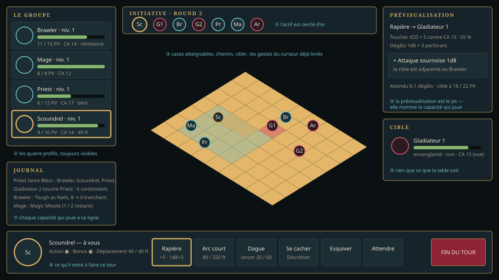

Version 0.0.2 — système de combat
Ce que les fiches préfabriquées imposent
Les quatre fiches du Player's Guide (p. 195, 199, 203, 207) sont de niveau 1 et ne listent ni capacités, ni sorts, ni équipement : tout cela se déduit des règles de la classe. Le relevé complet est dans le référentiel.
| Classe | Simplifie | Fiche | Ce qu'elle demande au moteur |
|---|---|---|---|
| Brawler | Barbarian | Half-Orc, PV 15, CA 14 | une CA sans armure ; la résistance à tous les dégâts |
| Mage | Wizard | Autumn Elf, PV 8, CA 12 | l'incantation simplifiée : deux lancers par jour et par sort |
| Priest | Cleric | Hill Dwarf, PV 12, CA 17 | les soins, bless et la concentration |
| Scoundrel | Rogue | Human, PV 10, CA 14 | l'attaque sournoise par adjacence d'un allié ; le déplacement sans attaque d'opportunité |
Deux de ces mécaniques n'ont de sens qu'en groupe — l'attaque sournoise et les soins : c'est pourquoi classes et combat de groupe sont dans la même version.
L'interface


Le plafond
Niveaux 1 à 5. Les tables sont saisies jusqu'au niveau 20, mais seules les capacités des cinq premiers niveaux sont implémentées : c'est ce que l'Empire central demande. Le reste est à la 0.3.0.